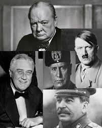
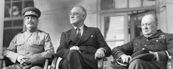
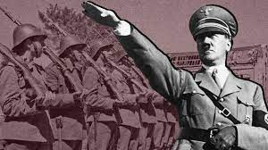
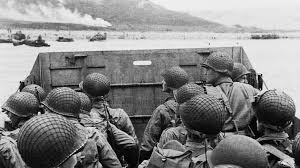

Los líderes de la Segunda Guerra MundialBenito Mussolini y Adolf Hitler

Iósif Stalin, Franklin Roosevelt y Winston Churchill

Adolf Hitler

Desembarco de NormandíaLa conquista de la isla de Iwo Jima
Soldado alzando una bandera sobre el Reichstag, BerlínLos Efectos de las Bombas sobre Hirosima y NagasakiFirma del acta de Rendición de Japón en el USS. Missouri